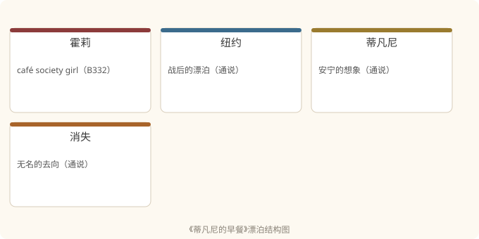

蒂凡尼的早餐
一、基本信息
| 作者 | 杜鲁门·卡波特 |
|---|---|
| 成书/出版 | 1958年（Britannica B332：Breakfast at Tiffany's (1958)） Truman Capote — Encyclopaedia Britannica（百科全书） |
| 国别/地区 | 美国 |
| 时代 | 现当代 · 20世纪50年代末 |
| 体裁 | 中篇小说 |
| 语言 | 英语 |

《蒂凡尼的早餐》漂泊结构图（主题·结构图）
二、创作背景
Britannica（B332）：Breakfast at Tiffany's——Holly Golightly——'a young fey café society girl'（B332）。
Britannica（B332）：卡波特——'nonfiction novel'的先驱；In Cold Blood 为其巅峰（交叉）。
题材（通说待核）：纽约'unamed nameless'叙述者眼中的霍莉——野性、漂泊与'蒂凡尼'的安宁想象。
三、内容脉络
（通说待核——B332未载剧情）霍莉与叙述者的公寓友谊与她的消失。
（通说待核）'蒂凡尼'：不上锁的安宁想象。
四、主要人物表
| 人物 | 身份 | 说明 |
|---|---|---|
| 霍莉·戈莱特利 | café society girl | （B332：Holly Golightly——'a young fey café society girl'） |
| 叙述者 | 作家 | （通说待核，B332未载） |
五、主题与艺术特点
- 漂泊与归属（通说待核）。
- '蒂凡尼'：消费时代的安宁想象（通说待核）。
- 纽约战后都市风情（B332 语境）。
六、影响与评论
- Britannica：'a young fey café society girl'（B332）。
Truman Capote — Encyclopaedia Britannica（百科全书） - Britannica：卡波特 In Cold Blood 为'nonfiction novel'巅峰（B332 交叉）。
Truman Capote — Encyclopaedia Britannica（百科全书）
七、阅读建议
难点
- 'café society'语境。
- 第一人称回忆框架。
- 《蒂凡尼的早餐》中译本（上海译文等——通说待核）。
- 英文原版。
卡波特入门首选；后接《冷血》。
八、待核实
- 霍莉人名核对（B332拼写）。
- 1961年电影改编（奥黛丽·赫本说）待核。
- 1958年出版细节待核。